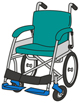

トップページ＜社協福祉資材・機材貸出
車イス・各種機材等を無料で貸し出しています。 |
 |
福祉資材・機材貸出について
| 対象者 | 福祉教室で利用したいかた 地域福祉推進のための事業等に一時的に必要とする団体等 |
| 貸出し期間 | 原則として一ヶ月以内程度 |
| 利用料 | 無料 |
| 利用手続き | 社会福祉協議会事務局へお越しいただき、所定の申請書に記入していただきます。 |
| お願い | 大勢の方が利用するものですので、ご利用後は次に利用する方のために、ご利用の際に汚れてしまった時は、簡単なお掃除などお手入れをお願いします。 営利団体の営業行為またはそれに準ずる場合はご遠慮いただきます。 |
| お申込み お問い合わせ |
茅野市社会福祉協議会 TEL 0266-73-4431 FAX 0266-73-8030 |
主な福祉資材・機材一覧
| 車イス ※車イス貸出についての留意事項をご覧ください。 |
・介助タイプ ・自操タイプ |
| 福祉レクレーション・イベント関係 | ・トーンチャイム ・メロディーベル ・タンバリン ・紅白はちまき ・おんべ ・ハッピ（黒・ピンク・黄色） ・ガス釜 ・スタッフジャンバー など |
| 機材関係 | ・液晶プロジェクター ・OHP ・スクリーン ・マイク・ワイヤレスマイク ・ミュージックボックス など |
| 福祉用具 | ・アイマスク ・白杖（折りたたみ式） ・点字器 ・点字例文集 ・高齢者擬似体験セット「もみじ箱」 など |
※車イス貸出についての留意事項 |
 |
| 対象者 | 福祉教室などで利用したいかた 地域福祉推進のための事業等に一時的に必要とする団体等 在宅で疾病や障害などにより短期的、突発的に車イスが必要なかた（介護保険制度を利用できるかたは除く） |
| 貸出し期間 | 原則として一ヶ月以内程度 |
| 利用料 | 無料 |
| 利用手続き | 社会福祉協議会事務局へお越しいただき、所定の申請書に記入していただきます。 ※有料でレンタルを行う事業所とは異なりますので、車いすの配送は行っておりませんのでご了承ください。 |
| お願い | 大勢のかたが利用するものですので、ご利用後は次に利用する方のために、ご利用の際に汚れてしまった時は、簡単なお掃除などお手入れをお願いします。 無料で貸出しをしていますので、介護保険の認定がおりているかたで日常生活において恒常的に利用の必要があるかたについては、制度の利用を優先してください。 営利団体の営業行為またはそれに準ずる場合はご遠慮いただきます。 |
| その他 | ・一時的な利用に関しては、対象外のかたでもご利用可能な場合がありますので、ご相談ください。 |
 茅野市社会福祉協議会
茅野市社会福祉協議会